This page is organized as follows:
We recommend first watching the summary video to gain a high-level understanding of the paper, then reading the summary article to explore the main observations in greater detail, then reading the original paper for more technical details.
Cross-domain sequential recommendation (CDSR) combines user behavior from multiple domains (for example, electronics and books) to improve next-item prediction. This is difficult because domain signals can be noisy, redundant, or even conflicting.
The standard tool is cross-attention. The common interpretation of cross-attention's role is residual alignment: cross-attention mostly filters noise and keeps information that is already aligned with the query representation.
This paper argues that this view is incomplete. The core claim is that gated cross-attention can also discover complementary information in an orthogonal subspace, and that this behavior is directly related to better ranking performance and better parameter efficiency.
|
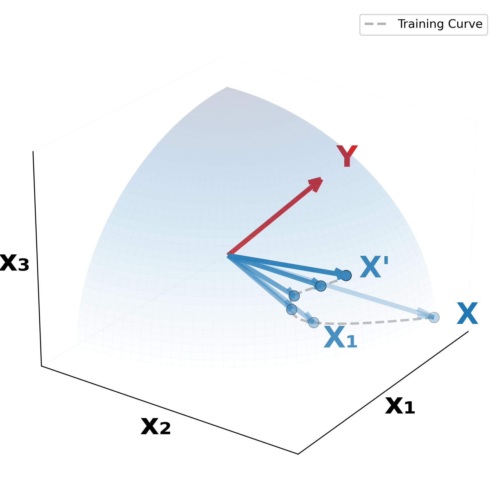 (a) Residual Alignment |
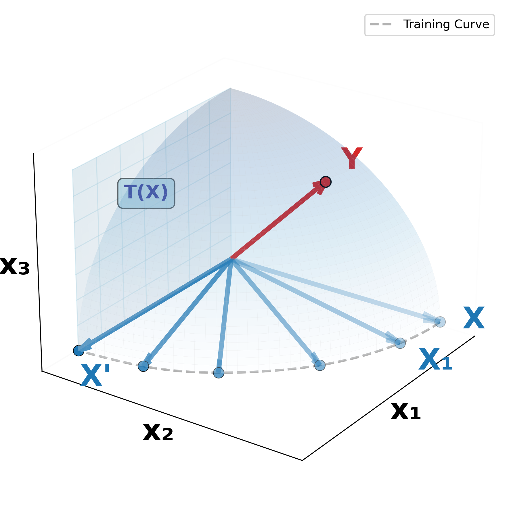 (b) Orthogonal Alignment |
|
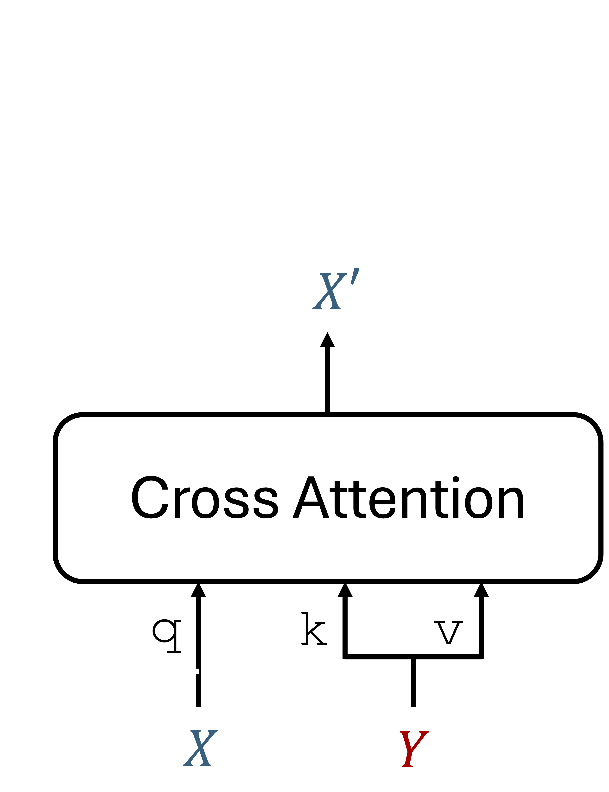 (c) Cross-attention |
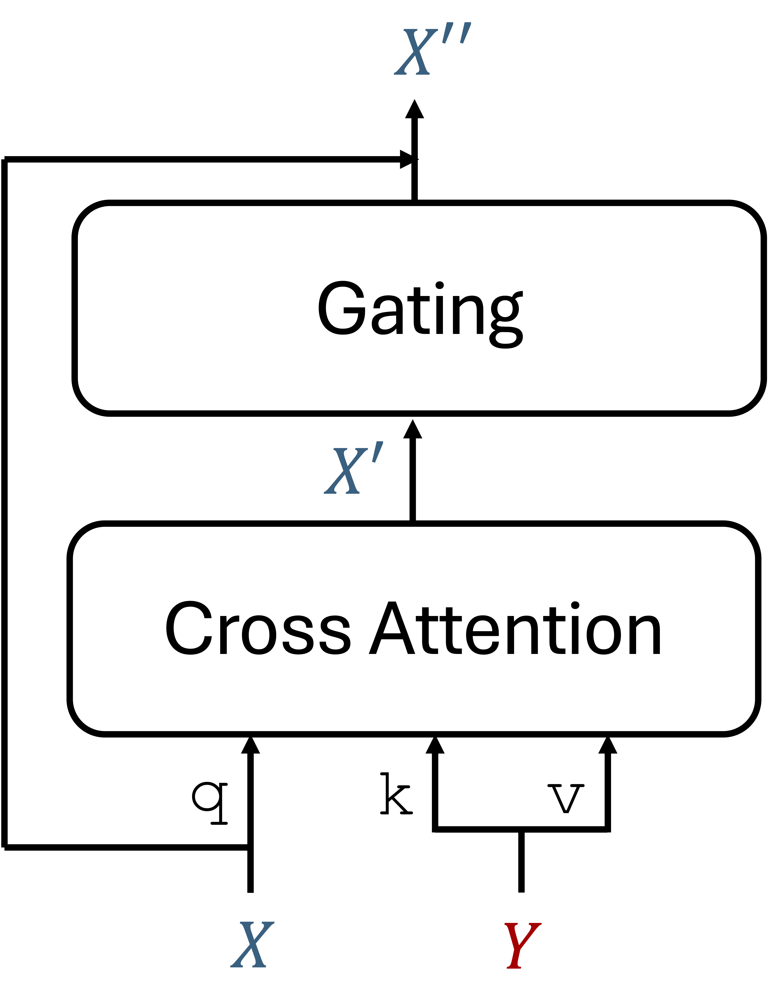 (d) Gated cross-attention |
Let X be the query representation entering cross-attention and X' be the raw cross-attended update. The paper defines Orthogonal Alignment as the follows
In the gated module, the update is injected as a gated residual term and then normalized. We found that in end-to-end trainig, the orthgonal alignment naturally emerges without any explicit orthogonality regularization in either: Loss formulation or Model architecture. We further observer that orthgonal alignment is causually associated with performance gains. We are curious on why this phenomenon naturally emerges in the model. One of our main contributions is to show that orthogonal alignment is a causal driver of performance gains, and one plausible reason it emerges naturally is its parameter-efficient use of representational capacity.
Adding GCA at early layers consistently improves ranking metrics across the three backbones. The paper reports substantial relative NDCG gains, while also noting that deeper stacking can introduce trade-offs and does not guarantee monotonic improvement.
An important nuance is that NDCG and AUC behavior is architecture-dependent: some settings show stronger top-rank gains with possible AUC degradation, indicating different precision-discrimination trade-offs.
| Model | Dataset (A-B) | NDCG@1A | NDCG@10A | NDCG@1B | NDCG@10B | AUCA | AUCB |
|---|---|---|---|---|---|---|---|
| LLM4CDSR | Cloth-Sport | 0.7157 ±0.0025 | 0.7821 ±0.0018 | 0.5870 ±0.0051 | 0.6493 ±0.0020 | 0.9216 ±0.0013 | 0.8621 ±0.0054 |
| +gcaearly | 0.7283 ±0.0027 | 0.8052 ±0.0014 | 0.5977 ±0.0054 | 0.6560 ±0.0046 | 0.9364 ±0.0009 | 0.8655 ±0.0038 | |
| +gcastack | 0.7310 ±0.0012 | 0.8056 ±0.0014 | 0.6112 ±0.0032 | 0.6638 ±0.0038 | 0.9370 ±0.0010 | 0.8664 ±0.0030 | |
| LLM4CDSR | Elec-Phone | 0.2101 ±0.0030 | 0.3512 ±0.0009 | 0.1419 ±0.0008 | 0.2608 ±0.0010 | 0.7901 ±0.0008 | 0.7197 ±0.0011 |
| +gcaearly | 0.2378 ±0.0011 | 0.3815 ±0.0018 | 0.1861 ±0.0035 | 0.2845 ±0.0027 | 0.7970 ±0.0018 | 0.7218 ±0.0026 | |
| +gcastack | 0.2410 ±0.0012 | 0.3800 ±0.0011 | 0.1994 ±0.0054 | 0.3035 ±0.0049 | 0.7937 ±0.0013 | 0.7252 ±0.0026 | |
| ABXI | Beauty-Elec | 0.0730 ±0.0070 | 0.1724 ±0.0071 | 0.0548 ±0.0038 | 0.1273 ±0.0028 | 0.7216 ±0.0027 | 0.7123 ±0.0009 |
| +gcaearly | 0.0727 ±0.0060 | 0.1793 ±0.0047 | 0.0544 ±0.0044 | 0.1244 ±0.0025 | 0.7410 ±0.0025 | 0.7169 ±0.0024 | |
| +gcastack | 0.0733 ±0.0042 | 0.1846 ±0.0057 | 0.0566 ±0.0052 | 0.1271 ±0.0042 | 0.7354 ±0.0048 | 0.6973 ±0.0051 | |
| ABXI | Food-Kitch | 0.0593 ±0.0074 | 0.1541 ±0.0130 | 0.0416 ±0.0058 | 0.1093 ±0.0113 | 0.7205 ±0.0015 | 0.7180 ±0.0032 |
| +gcaearly | 0.0703 ±0.0094 | 0.1757 ±0.0092 | 0.0548 ±0.0053 | 0.1327 ±0.0072 | 0.7317 ±0.0039 | 0.7150 ±0.0031 | |
| +gcastack | 0.0882 ±0.0052 | 0.1853 ±0.0013 | 0.0527 ±0.0020 | 0.1282 ±0.0028 | 0.7148 ±0.0026 | 0.6924 ±0.0009 | |
| CDSRNP | Elec-Phone (1M) | 0.0499 ±0.0087 | 0.1170 ±0.0079 | 0.0920 ±0.0050 | 0.1935 ±0.0021 | - | - |
| +gcaearly | 0.0547 ±0.0010 | 0.1209 ±0.0092 | 0.0980 ±0.0010 | 0.1989 ±0.0031 | - | - | |
| +gcastack | 0.0531 ±0.0078 | 0.1229 ±0.0125 | 0.0946 ±0.0022 | 0.1942 ±0.0012 | - | - | |
Table 1. NDCG and AUC comparison with the three baselines and GCA-augmented models. Elec stands for Electronic, and Kitch stands for Kitchen. GCAearly denotes GCA[0], and GCAstack denotes stacked placements GCA[0, i1, i2, ..., iN] where in > 1. Across datasets, GCA improves NDCG@{1,10}, with GCAearly providing up to 31% and GCAstack up to 48% relative NDCG improvements, with mean gains of 8-12%.
The authors plot NDCG@10 against the absolute cosine similarity |cos(X, X′)|. Across datasets and backbones, the dominant pattern is a negative correlation: lower similarity (more orthogonal updates) is associated with better ranking quality.
This is the empirical heart of the paper: GCA is not only an extra attention block, but a mechanism that consistently encourages complementary directions in representation space.
|
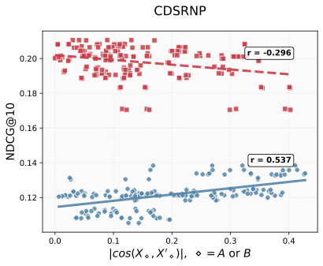 (a)CDSRNP |
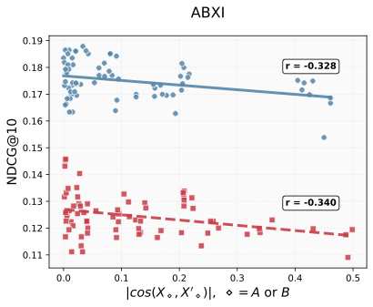 (b) ABXI |
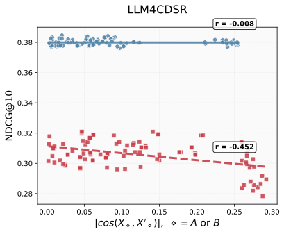 (b) LLM4CDSR |
To explain why this phenomenon emerges naturally, the paper compares:
Across five test settings, GCA-augmented models outperform parameter-matched baselines, supporting the interpretation that orthogonal subspace usage improves accuracy per parameter (reported around 1.4x efficiency in the paper's framing).
In LLM4CDSR, early GCA is especially effective, consistent with the idea that simply widening the baseline can saturate when representational degrees of freedom are constrained.
|
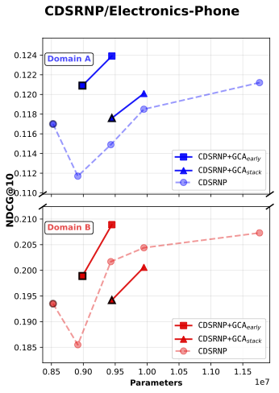 (a) CDSRNP |
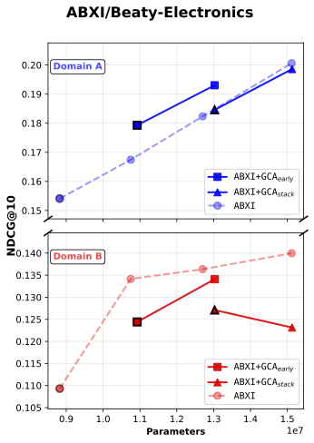 (b) ABXI |
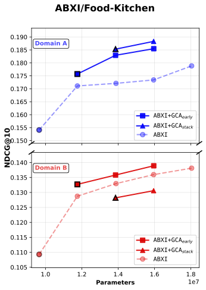 (c) ABXI |
|
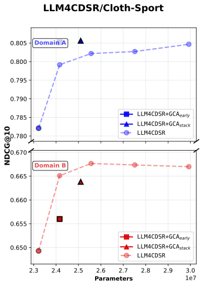 (d) LLM4CDSR |
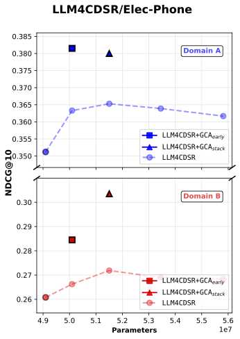 (e) LLM4CDSR |
Figure 3: NDCG@10 comparison between baseline and baseline + gated cross attention model
The paper checks whether orthogonalization is just a side effect of query-key similarity. It is not: while |cos(X, XA+B)| varies across models and datasets, |cos(X, X′)| stays in a relatively stable low range. This suggests GCA consistently decouples updates from the query to extract complementary information.
|
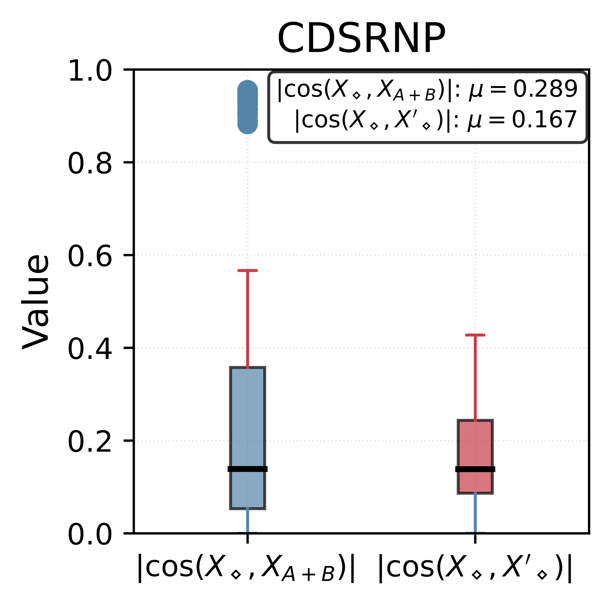 (a) CDSRNP |
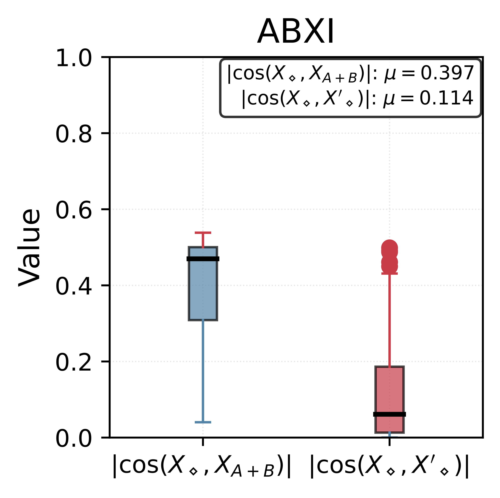 (b) ABXI |
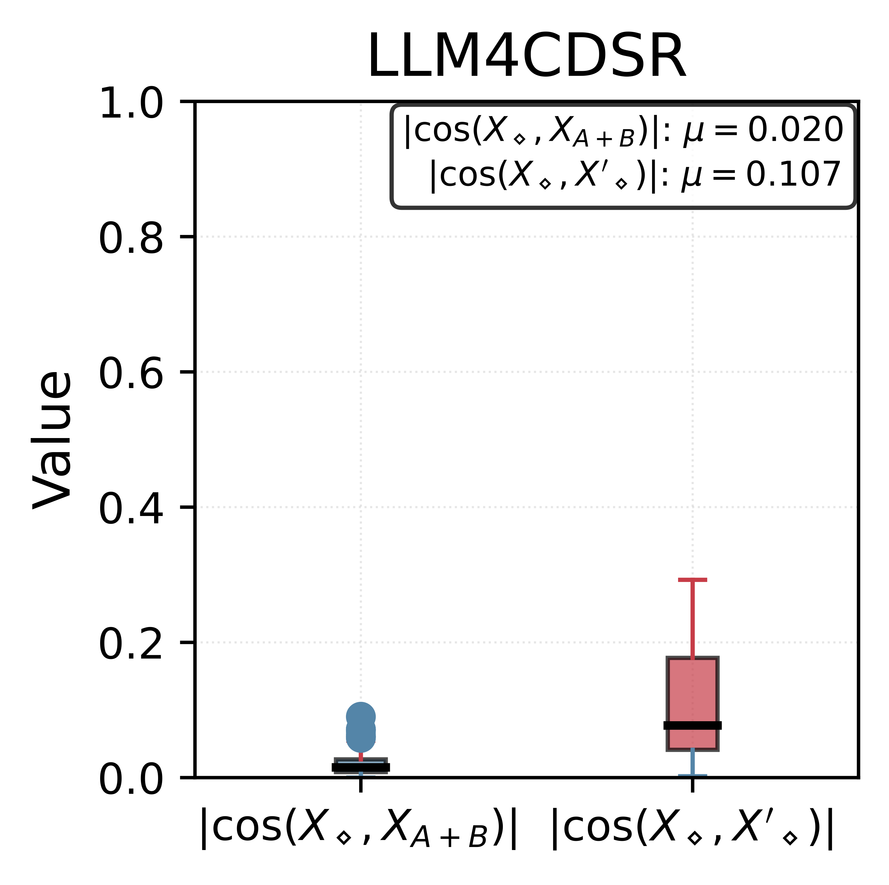 (c) LLM4CDSR |
|cos(X⋄, XA+B)| and |cos(X⋄, X⋄′)|, where ⋄ ∈ {A, B}. While |cos(X⋄, X⋄′)| remains stable (median approximately in [0.1, 0.2]), |cos(X⋄, XA+B)| varies substantially, highlighting that GCA induces a consistent degree of orthogonalization regardless of underlying X⋄ (query)-XA+B (key, value) similarity. μ denotes a mean.
Two ablations support a causal role for orthogonality:
Together, these results support the interpretation that orthogonal components carry more of the useful transfer signal.
| Model | Dataset (A-B) | NDCG@1A | NDCG@1A w. X′ → X′∥ | NDCG@1A w. X′ → X′⊥ | NDCG@1A w. +Lortho |
|---|---|---|---|---|---|
| LLM4CDSR | Cloth-Sport | 0.7157 ±0.0025 | - | - | - |
| +gcaearly | 0.7283 ±0.0027 | 0.7193 ±0.0041 | 0.7231 ±0.0004 | 0.7313 ±0.0004 | |
| +gcastack | 0.7310 ±0.0012 | 0.7213 ±0.0021 | 0.7298 ±0.0031 | 0.7392 ±0.0031 | |
| LLM4CDSR | Elec-Phone | 0.2101 ±0.0030 | - | - | - |
| +gcaearly | 0.2378 ±0.0011 | 0.2012 ±0.0051 | 0.2321 ±0.0044 | 0.2438 ±0.0031 | |
| +gcastack | 0.2410 ±0.0012 | 0.2201 ±0.0032 | 0.2377 ±0.0041 | 0.2481 ±0.0003 | |
| ABXI | Beauty-Elec | 0.0730 ±0.0070 | - | - | - |
| +gcaearly | 0.0727 ±0.0060 | 0.0653 ±0.0042 | 0.0691 ±0.0030 | 0.0747 ±0.0029 | |
| +gcastack | 0.0733 ±0.0042 | 0.0611 ±0.0028 | 0.0701 ±0.0019 | 0.0751 ±0.0032 | |
| ABXI | Food-Kitch | 0.0593 ±0.0074 | - | - | - |
| +gcaearly | 0.0703 ±0.0094 | 0.0511 ±0.0044 | 0.0654 ±0.0051 | 0.0709 ±0.0025 | |
| +gcastack | 0.0882 ±0.0052 | 0.0698 ±0.0061 | 0.0819 ±0.0009 | 0.0931 ±0.0041 | |
| CDSRNP | Elec-Phone (1M) | 0.0499 ±0.0087 | - | - | - |
| +gcaearly | 0.0547 ±0.0010 | 0.0410 ±0.0031 | 0.0511 ±0.0041 | 0.0551 ±0.0005 | |
| +gcastack | 0.0531 ±0.0078 | 0.0391 ±0.0069 | 0.0478 ±0.0009 | 0.0587 ±0.0051 |
Table 2. Ablation study. "w." denotes "with". Results from projection ablations and orthogonality regularization support the interpretation that orthogonal alignment contributes to the observed performance gains. The improvement from NDCG@1A to NDCG@1A + Lortho in the ablation study provides evidence supporting that orthogonal alignment causally contributes to performance gains.
This section justifies why GCA improves recommendation by injecting complementary information beyond the query span. We use the same notation as the main model, with \(\diamond\in\{A,B\}\), and LayerNorm without affine rescaling \(\mathrm{LN}(v)=\sqrt d\,Cv/\|Cv\|\).
Flattening token indices, let \(x\in\mathbb R^d\) be a token of \(X_\diamond\), and \(u\in\mathbb R^d\) the branch update entering LayerNorm. Define:
\[ C=I_d-d^{-1}\mathbf1\mathbf1^\top,\quad \tilde x=Cx,\quad \tilde u=Cu,\quad P_x=\frac{\tilde x\tilde x^\top}{\|\tilde x\|^2},\quad \tilde u_\parallel=P_x\tilde u,\quad \tilde u_\perp=(I-P_x)\tilde u. \]Hence \(\tilde u_\perp\) is the update component orthogonal to the centered query direction. The empirical statistic \(|\cos(X_\diamond,X'_\diamond)|\) serves as a sequence-level proxy for \(\|\tilde u_\parallel\|/\|\tilde u\|\): lower cosine implies larger complementary (orthogonal) fraction.
Connection to observations: Theorem 1 explains why \(X'_\diamond\) is driven away from \(X_\diamond\) (Observation 2). Theorem 2 gives the local causal mechanism behind projection and regularization ablations. Theorem 3 extends this to finite-sample bounds and parameter efficiency (Observation 3).
This paper reframes cross-attention design in CDSR: from only "align and denoise" toward "inject complementary orthogonal information." It also argues this is a plausible reason GCA improves accuracy per parameter.
The stated limitation is scope: the core evidence is in recommendation settings, so broader claims to other modalities should be treated as a direction for follow-up, not as a universal conclusion.
Bottom line: gated cross-attention helps not only by filtering, but by discovering complementary orthogonal directions that improve ranking and parameter efficiency.
Note: This summary is written from the main paper content (pages 1-9). Figure placeholders are intentionally marked as TODO for manual insertion.